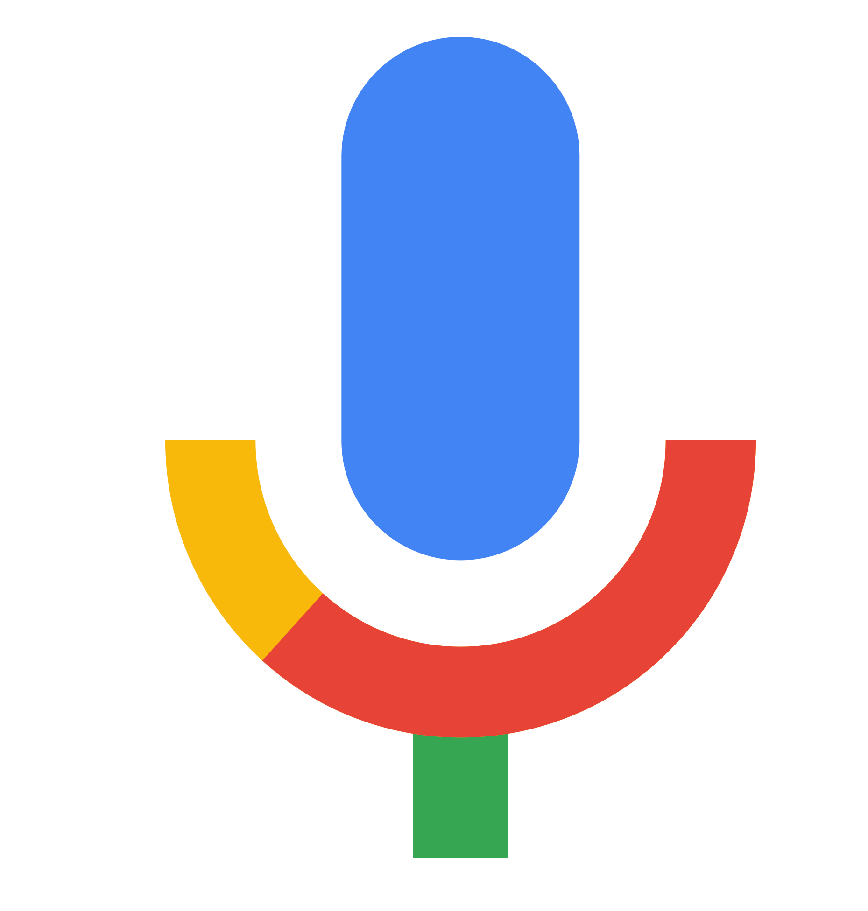
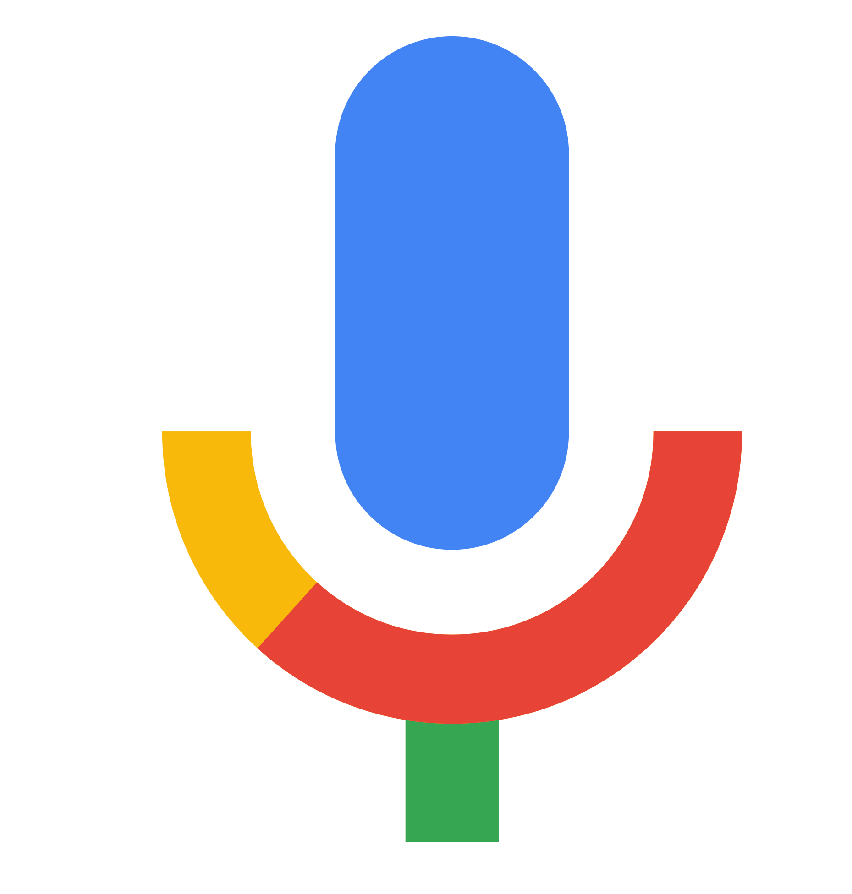

 >
>


Około 18042000 wyników (0,21 s)
Ognisko domowe - Wikipedia, wolna encyklopedia
Była siostrą Zeusa. Ognisko ku jej czci paliło się w każdym greckim domu. Stąd powiedzenie „w kręgu domowego ogniska”. W Rzymie ogniskiem domowym ...
Ognisko domowe - Wielki słownik języka polskiego
Ognisko domowe. rzadziej ognisko rodzinne. Definicja. dom rodzinny jako miejsce, w którym doświadczamy ciepła, spokoju, poczucia bezpieczeństwa i ...
Synonim ognisko domowe • Słownik synonimów do wyrażenia ...
Wyrażenie ognisko domowe posiada 41 synonimów w słowniku synonimów. Synonimy słowa ognisko domowe: siedziba, własny kąt, lokum, dom, mieszkanie, ...
Ciepło domowego ogniska - ...
Domowe ognisko. Ciepło domowego ogniska jest jedynie przenośnią, jednak w naszym życiu naprawdę potrzebujemy kontaktu z ogniem, nie ...
Czy przypadkiem kiedyś nie będziemy tego żałować?
24.01.2000 — Na to pytanie, odpowiemy już niebawem. W swoim odpowiednim czasie wszystko się rozwiąże
A teraz troszkę muzyki...
21.05.1999 — Czemu ta piosenka? Akurat leci w tym momencie na mojej playliście
Moim zdaniem to nie ma tak, że dobrze albo że nie ... - Wykop
Chodzi o to, że kiedy wyznaje się pewne wartości, nawet pozornie uniwersalne, bywa, że nie znajduje się zrozumienia, które by tak rzec, które ... Wideo
- A jeśli pewnego dnia będę musiał odejść?... - Hospicjum ...
- zapewnił go Puchatek. - Posiedzę tu sobie i na Ciebie poczekam. Kiedy się kogoś kocha, to ten drugi ktoś nigdy nie znika. Alan Alexander Milne - Kubuś ...
Wyszukiwania podobne do: życie
| Czym jest życie człowieka | Jakie jest życie |
| Życie definicją filozoficzną | Te życie czy to życie |
| Życie jest cudowne | Żyć trzeba umieć |
| G | o | o | o | o | o | o | o | o | o | o | g | l | e | > | |
| 1 | 2 | 3 | 4 | 5 | 6 | 7 | 8 | 9 | 10 |